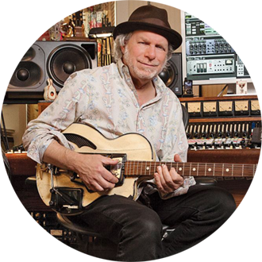

Lee Ronaldo
"I’ve been raving about the Baxendale remanufactured guitar process, to any and everyone,
since I had one of my own guitars restored. Scott took a $400 50-s era Kay Super-Jumbo guitar–that I bought on a
whim–and turned it into a true world class instrument. You should hear this thing! It’s got bottom end that goes
on
forever!
They are a-MAZ-ing!"
Lera Lynne
"There’s definitely no shortage of character or quality at Baxendale. It’s the place to go
if you want something truly special. Somehow my refurbished ’57 acoustic is surprisingly super rugged too. It’s
THE
place to go when I’m looking to buy a guitar."
Mike Cooley
"It’s been almost twenty years since I stumbled upon Scott Baxendale and Baxendale
guitars.
Since then I’ve lost count of how many of these instruments have ended up in the hands of current and former
members
of DBT, other artists we’ve toured with and fans from all over. What I do know is there is a genuine love of music
that oozes out of every one. That’s why they’ve been such a huge part of the sound of Drive by Truckers and I look
forward to playing them for many more years to come."
Buddy Miller
"Nobody else does what Scott Baxendale does, Scott stands alone with the vision to
re-engineer and transform an old guitar into a much better instrument than it ever was…a masterpiece. I’ve
purchased
several and they are some of the most soulful instruments I own. My Kay Jumbo sounds as good or better than any of
my ’50’s Gibson’s."

Patterson Hood
"Our friend Scott Baxendale has been one of the world’s foremost luthiers for decades. He
takes an old vintage guitar and recycles it into a brand-new handmade guitar using as much of the original parts
as
possible. These are among my very favorite instruments and have been used on our last several albums and played in
literally hundreds of shows around the world."
Luther Dickenson
"Baxendale conversions are not only the sound you hear on my records, they are the sound
of
community. Most recording sessions start with comparing Bax conversions or someone realizing "they need a Bax!".
Robert Plant, approached my Sovereign every day, and picked it up, because that’s what "Pagey" played..
They are instant classics, dry, open and ancient–but respond like the classic Martin I’ve never had."
Carl Broemel
"The 3 Baxendale Conversion guitars I own are all unique, inspiring, and useful in their
own
special ways. I use them on stage and in the studio all the time!"
Firm Friends
Other notable artists that have, or are currently using Baxendale Conversions:
Jim James, Peter Buck, Mike Mills, Jeff Tweedy, Mick Jones, Brittany Howard, Justin Townes Earl, Butch Walker,
David
Barbe, Ryan Bingham, Bill Berry, Tim Huffman, Booker T Jones, Jimmy Herring, Nels Kline, Nick Greer, Howe Gelb,
Kurt
Vile, Jason Isbell and Of Montreal.